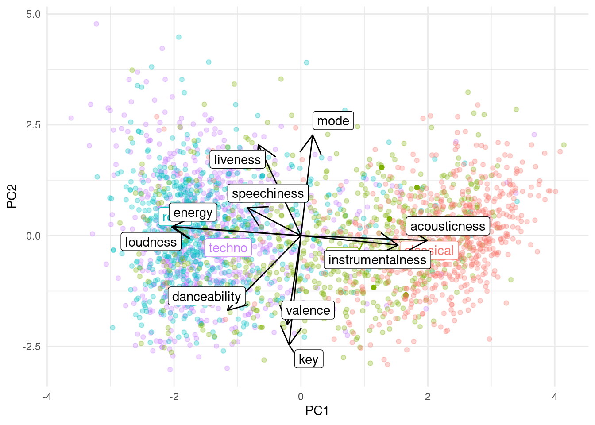
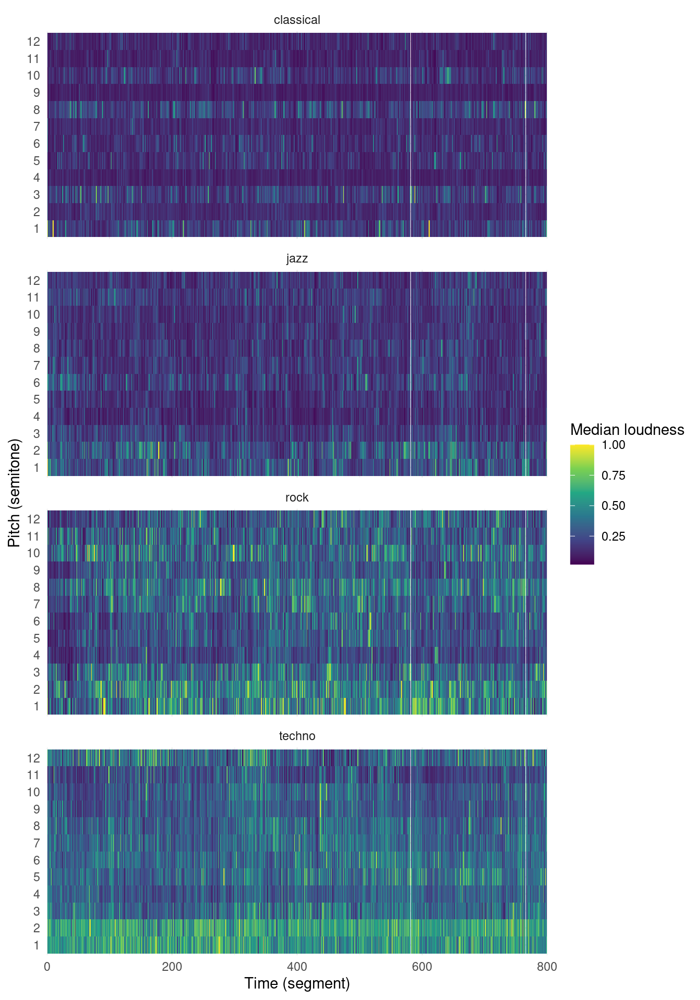

Predicting the music genre of spotify tracks using deep learning
Abstract
Music genres are often composed of particular pitch patterns that can be used for prediction. The Spotify API provides features for entire tracks, e.g. its loudness or acousticness scores, as well as the sequence of the individual pitches (notes). Totaling 3600 tracks across techno, rock, jazz and classicsal generes were analyzed and used for both classical Machine Learning and Deep Learning modeling methods. Validation accuracy of both approaches were similar suggesting that more sophisticated network architectures are needed to increase the model performance.
Tech stack
- keras deep learning framework
- Tensorflow deep learning framework
- tidymodels machine learning framework
- tidyverse data wrangling
- R targets pipeline system
- spotifyr REST API calls
- quarto notebook documentation
Keywords:
- Spatial data analysis
- deep learning
- CNN
- LSTM
- REST APIs
ETL pipeline
Spotify audio analysis API was queried to get summary features, e.g. danceability and accousticness, as well as the individual pitch sequences of 3600 music tracks. An R targets pipeline DAG was created to retrieve and transform the data allowing parallelization and caching:
source("_targets.R")
tar_load(c("terms", "track_audio_features", "selected_audio_features", "audio_analyses", "track_train_test_split", "track_searches", "track_pitches", "valid_tracks", "track_audio_analyses"))
tar_visnetwork()── Attaching packages ─────────────────────────────────────── tidyverse 1.3.2 ──
✔ ggplot2 3.3.6 ✔ purrr 0.3.4
✔ tibble 3.1.8 ✔ dplyr 1.0.10
✔ tidyr 1.2.1 ✔ stringr 1.4.1
✔ readr 2.1.2 ✔ forcats 0.5.1
── Conflicts ────────────────────────────────────────── tidyverse_conflicts() ──
✖ dplyr::filter() masks stats::filter()
✖ dplyr::lag() masks stats::lag()
Attaching package: ‘spotifyr’
The following object is masked from ‘package:broom’:
tidyData overview
Spotify was queried by the following terms. Up to 50 tracks per term were retrieved.
terms[1] "techno" "rock" "jazz" "classical"Total number of tracks:
nrow(track_searches)[1] 3600Tracks per term:
track_searches |> count(term)# A tibble: 4 × 2
term n
<chr> <int>
1 classical 900
2 jazz 900
3 rock 900
4 techno 900Features per track:
tracks <-
track_audio_features |>
left_join(track_searches, by = "id") |>
filter(id %in% valid_tracks) |>
mutate(term = factor(term))
colnames(tracks) [1] "danceability" "energy"
[3] "key" "loudness"
[5] "mode" "speechiness"
[7] "acousticness" "instrumentalness"
[9] "liveness" "valence"
[11] "tempo" "type.x"
[13] "id" "uri.x"
[15] "track_href" "analysis_url"
[17] "duration_ms.x" "time_signature"
[19] "term" "offset"
[21] "artists" "available_markets"
[23] "disc_number" "duration_ms.y"
[25] "explicit" "href"
[27] "is_local" "name"
[29] "popularity" "preview_url"
[31] "track_number" "type.y"
[33] "uri.y" "album.album_type"
[35] "album.artists" "album.available_markets"
[37] "album.href" "album.id"
[39] "album.images" "album.name"
[41] "album.release_date" "album.release_date_precision"
[43] "album.total_tracks" "album.type"
[45] "album.uri" "album.external_urls.spotify"
[47] "external_ids.isrc" "external_urls.spotify" Number of tracks after sanity checks:
nrow(tracks)[1] 3477Summary features for prediction
features <- c("danceability", "acousticness")
tar_load(track_train_test_split)
tracks_train <- tracks |> inner_join(track_train_test_split) |> filter(is_train)Joining, by = "id"tracks_train |>
select(term, features) |>
mutate(across(features, scale)) |>
pivot_longer(features) |>
ggplot(aes(term, value)) +
geom_quasirandom() +
geom_boxplot(outlier.size = NULL, width = 0.5) +
facet_wrap(~ name, scales = "free") +
coord_flip()Note: Using an external vector in selections is ambiguous.
ℹ Use `all_of(features)` instead of `features` to silence this message.
ℹ See <https://tidyselect.r-lib.org/reference/faq-external-vector.html>.
This message is displayed once per session.- Techno songs are high in danceability and low in acousticness
(Linear Euclidean) ordination biplot to show at all numeric features at once:
pca <-
track_audio_features |>
semi_join(tracks_train) |>
column_to_rownames("id") |>
select(selected_audio_features) |>
mutate(across(everything(), scale)) |>
filter(if_any(everything(), ~ ! is.na(.x))) |>
prcomp()Joining, by = c("danceability", "energy", "key", "loudness", "mode",
"speechiness", "acousticness", "instrumentalness", "liveness", "valence",
"tempo", "id", "track_href", "analysis_url", "time_signature")
Note: Using an external vector in selections is ambiguous. ℹ Use
`all_of(selected_audio_features)` instead of `selected_audio_features` to
silence this message. ℹ See
<https://tidyselect.r-lib.org/reference/faq-external-vector.html>. This message
is displayed once per session.tracks_pca <-
pca$x |>
as_tibble(rownames = "id") |>
left_join(track_audio_features, by = "id") |>
left_join(track_searches, by = "id")
# get medoids
track_clusters <-
tracks_pca |>
group_by(term) |>
summarise(across(c(PC1, PC2), median))
tibble() |>
ggplot(aes(x = PC1, y = PC2, color = group)) +
geom_text(
data = track_clusters |> mutate(group = "term"),
mapping = aes(label = term)
) +
geom_text(
data = pca$rotation |> as_tibble(rownames = "feature") |> mutate(group = "feature"),
mapping = aes(label = feature)
)
More detailed biplot:
tibble() |>
ggplot(aes(x = PC1, y = PC2)) +
geom_point(
data = tracks_pca,
mapping = aes(color = term),
alpha = 0.3
) +
ggrepel::geom_label_repel(
data = track_clusters,
mapping = aes(label = term, color = term)
) +
guides(color = FALSE) +
ggnewscale::new_scale_color() +
geom_segment(
data = pca$rotation |> as_tibble(rownames = "feature"),
mapping = aes(x = 0, y = 0, xend = max(abs(pca$x[,1])) * PC1, yend = max(abs(pca$x[,2])) * PC2),
arrow = arrow()
) +
ggrepel::geom_label_repel(
data = pca$rotation |> as_tibble(rownames = "feature"),
mapping = aes(label = feature, x = max(abs(pca$x[,1])) * PC1, y = max(abs(pca$x[,2])) * PC2)
)Warning: `guides(<scale> = FALSE)` is deprecated. Please use `guides(<scale> =
"none")` instead.
Sanity checks:
classical track are associated with acousticness
rock and techno tracks are associated with loudness
There is no clear separation between the genre clusters suggesting a complicated classification task.
summary(pca)$importance["Cumulative Proportion","PC2"][1] 0.47009Almost half of the variance can be explained by the first principal components, motivating the prediction of the terms based on the features. These features were also significantly different across the terms:
features |>
paste0(collapse = "+") |>
paste0("~ term") |>
lm(data = tracks) |>
anova()Analysis of Variance Table
Response: danceability + acousticness
Df Sum Sq Mean Sq F value Pr(>F)
term 3 213.03 71.009 915.1 < 2.2e-16 ***
Residuals 3473 269.49 0.078
---
Signif. codes: 0 '***' 0.001 '**' 0.01 '*' 0.05 '.' 0.1 ' ' 1features |>
paste0(collapse = "+") |>
paste0("~ term") |>
lm(data = tracks) |>
lm() |>
summary()
Call:
lm(formula = lm(paste0(paste0(features, collapse = "+"), "~ term"),
data = tracks))
Residuals:
Min 1Q Median 3Q Max
-1.18660 -0.17087 0.00622 0.16813 0.96074
Coefficients:
Estimate Std. Error t value Pr(>|t|)
(Intercept) 1.362783 0.009687 140.69 <2e-16 ***
termjazz -0.135915 0.013476 -10.09 <2e-16 ***
termrock -0.517331 0.013525 -38.25 <2e-16 ***
termtechno -0.588527 0.013436 -43.80 <2e-16 ***
---
Signif. codes: 0 '***' 0.001 '**' 0.01 '*' 0.05 '.' 0.1 ' ' 1
Residual standard error: 0.2786 on 3473 degrees of freedom
Multiple R-squared: 0.4415, Adjusted R-squared: 0.441
F-statistic: 915.1 on 3 and 3473 DF, p-value: < 2.2e-16We use the same set of test samples throughout the entire analysis:
library(tidymodels)
tar_load(model_data)
train <-
track_audio_features |>
filter(id %in% rownames(model_data$train_y)) |>
left_join(track_searches, by = "id") |>
mutate(term = term |> factor()) |>
select(term, selected_audio_features)
test <-
track_audio_features |>
filter(id %in% rownames(model_data$test_y)) |>
left_join(track_searches, by = "id") |>
mutate(term = term |> factor()) |>
select(term, selected_audio_features)Let’s start with a (linear) Support Vector Machine (SVM):
svm_linear(mode = "classification") |>
fit(term ~ ., data = train) |>#
predict(test) |>
bind_cols(test) |>
mutate(across(c("term", ".pred_class"), ~ factor(.x, levels = test$term |> unique()))) |>
accuracy(truth = term, estimate = .pred_class)# A tibble: 1 × 3
.metric .estimator .estimate
<chr> <chr> <dbl>
1 accuracy multiclass 0.715A (non-linear) random forest showed similar performance:
rand_forest(mode = "classification") |>
fit(term ~ ., data = train) |>
predict(test) |>
bind_cols(test) |>
mutate(across(c("term", ".pred_class"), ~ factor(.x, levels = test$term |> unique()))) |>
accuracy(truth = term, estimate = .pred_class)# A tibble: 1 × 3
.metric .estimator .estimate
<chr> <chr> <dbl>
1 accuracy multiclass 0.791The test accuracy was very high in general. Can it even be improved using the individual pitch sequences instead of relying on just a few summary features describing the entire track?
Pitch sequences for prediction
Some features are highly correlated, suggesting redundancy, e.g. :
tracks |>
ggplot(aes(danceability, loudness)) +
geom_point() +
stat_smooth(method = "lm") +
stat_cor()`geom_smooth()` using formula 'y ~ x'Indeed, lots of features were significantly correlated after FDR adjustment:
tracks |>
select(selected_audio_features) |>
as.matrix() |>
Hmisc::rcorr() |>
broom::tidy() |>
ungroup() |>
mutate(q.value = p.value |> p.adjust(method = "fdr")) |>
filter(q.value < 0.05 & abs(estimate) > 0.2) |>
arrange(-abs(estimate)) |>
unite(col = comparision, column1, column2, sep = " vs. ") |>
head(10) |>
ggplot(aes(comparision, estimate)) +
geom_col() +
coord_flip() +
labs(y = "Pearson correlation")
Music is composed of shorter and longer patterns. We can make use of the temporal property by doing convolutions on the time axis while using loudness of pitch frequencies as features.
Spotify audio analysis separates the track into many segments and calculates the loudness for each of the 12 pitches (half steps) of the scale.
track_audio_analyses$audio_analysis[[1]]$segments$pitches[1][[1]] [1] 0.366 0.128 0.311 0.106 0.412 1.000 0.886 0.633 0.333 0.122 0.213 0.473These are spectrograms of a subset of tracks representing the feature space for deep learning:
track_pitches |>
left_join(track_searches) |>
sample_frac(0.01) |>
select(id, term, pitches) |>
unnest(pitches) |>
group_by(id) |>
mutate(segment = row_number()) |>
pivot_longer(starts_with("V"), names_to = "pitch_name", values_to = "pitch") |>
mutate(pitch_name = pitch_name |> str_extract("[0-9]+") |> as.numeric() |> factor()) |>
group_by(term, segment, pitch_name) |>
summarise(pitch = median(pitch)) |>
ggplot(aes(segment, pitch_name)) +
geom_tile(aes(fill = pitch)) +
facet_wrap(~term, ncol = 1) +
scale_fill_viridis_c() +
scale_x_continuous(limits = c(0, 800), expand = c(0, 0)) +
labs(x = "Time (segment)", y = "Pitch (semitone)", fill = "Median loudness")Joining, by = "id"
`summarise()` has grouped output by 'term', 'segment'. You can override using
the `.groups` argument.
On average, techno tracks uses a variety of different niotes across the time of the track, whereas classical tracks mostly use a few particular notes.
Let’s define some model architectures for deep learning:
tar_load(model_archs)
model_archs$base() |> plot()Loaded Tensorflow version 2.9.1This base model does not utilize the spatialness of the data and is used for comparison.
model_archs$cnn1() |> plot()This is a sequential Convolutional Neural Network (CNN).
model_archs$cnn2() |> plot()This is a non sequential Convolutional Neural Network (CNN). The idea behind this model is that both short and long pitch patterns can be directly used for final prediction.
model_archs$lstm() |> plot()
Long Short-Term Memory (LSTM) networks view time as a one directional spatial feature, whereas one can go in both directions with CNNs. This makes sense for time series data, like the pitch sequences.
Evaluate deep learning models
tar_load(evaluations)
evaluations# A tibble: 4 × 7
name model epoch accuracy loss val_accuracy val_loss
<chr> <chr> <dbl> <dbl> <dbl> <dbl> <dbl>
1 cnn1 model_fits_a4330c15 93 0.748 0.636 0.731 0.725
2 cnn2 model_fits_fe0655a7 19 0.838 0.467 0.698 0.820
3 base model_fits_90ac26ad 81 0.559 1.02 0.557 1.08
4 lstm model_fits_1a00e901 14 0.494 1.10 0.532 1.11 All models outperformed the random guess with an expected accuracy of 25%. The simple CNN1 had the highest accuracy in the validation set.
evaluations |>
select(name, model) |>
mutate(history = model |> map(~ str_glue("tmp/train_history/{.x}.csv") |> read_csv())) |>
unnest(history) |>
pivot_longer(c("accuracy", "val_accuracy"), names_to = "subset") |>
mutate(subset = subset |> recode(accuracy = "train", "val_accuracy" = "validation")) |>
ggplot(aes(epoch, value, color = subset)) +
geom_line() +
facet_wrap(~name, ncol = 1) +
labs(y = "Accuracy")Rows: 96 Columns: 5
── Column specification ────────────────────────────────────────────────────────
Delimiter: ","
dbl (5): epoch, accuracy, loss, val_accuracy, val_loss
ℹ Use `spec()` to retrieve the full column specification for this data.
ℹ Specify the column types or set `show_col_types = FALSE` to quiet this message.
Rows: 40 Columns: 5
── Column specification ────────────────────────────────────────────────────────
Delimiter: ","
dbl (5): epoch, accuracy, loss, val_accuracy, val_loss
ℹ Use `spec()` to retrieve the full column specification for this data.
ℹ Specify the column types or set `show_col_types = FALSE` to quiet this message.
Rows: 106 Columns: 5
── Column specification ────────────────────────────────────────────────────────
Delimiter: ","
dbl (5): epoch, accuracy, loss, val_accuracy, val_loss
ℹ Use `spec()` to retrieve the full column specification for this data.
ℹ Specify the column types or set `show_col_types = FALSE` to quiet this message.
Rows: 55 Columns: 5
── Column specification ────────────────────────────────────────────────────────
Delimiter: ","
dbl (5): epoch, accuracy, loss, val_accuracy, val_loss
ℹ Use `spec()` to retrieve the full column specification for this data.
ℹ Specify the column types or set `show_col_types = FALSE` to quiet this message.The base and CNN1 model generalize well on the external validation samples, whereas CNN2 is affected by over-fitting. This is maybe due to the high number of trainable parameters.
Conclusion
CNN1 outperformed a linear SVM but its test accuracy was lower compared to a random forest. Regarding model complexity and computational effort for training, the analysis suggest that depp learning model might not be worth the efforts to predict the music genre if meaningful summary features, e.g. danceability and accousticness are available. However, using more sophisticated deep learning architectures, new deep learning models might be developed in the future to improve the validation accuracy even further.